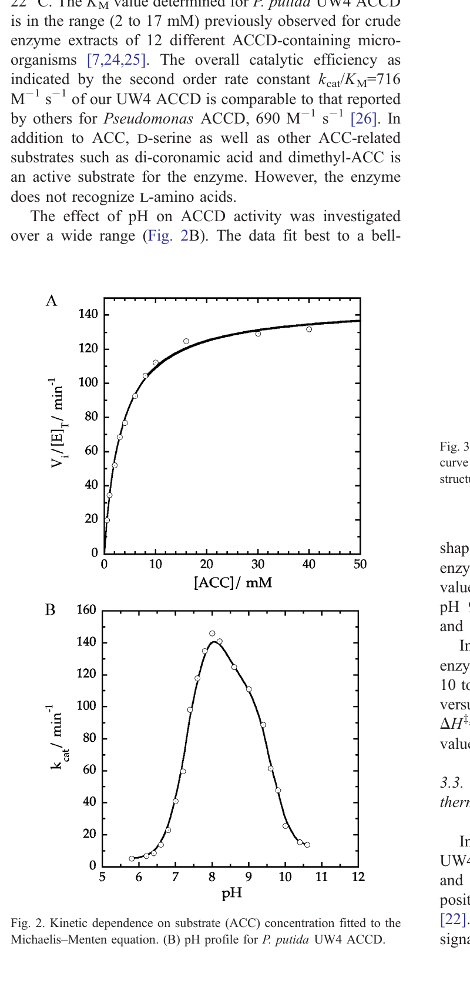
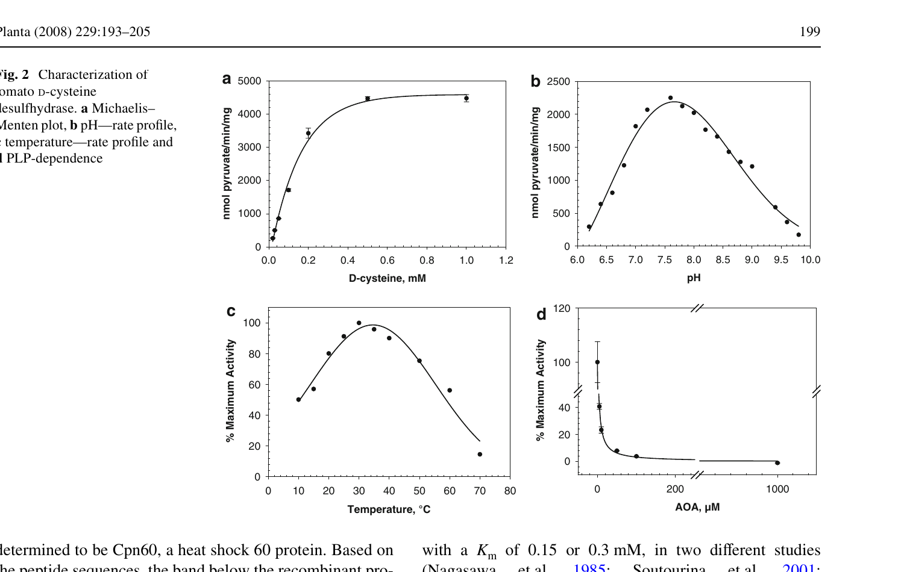
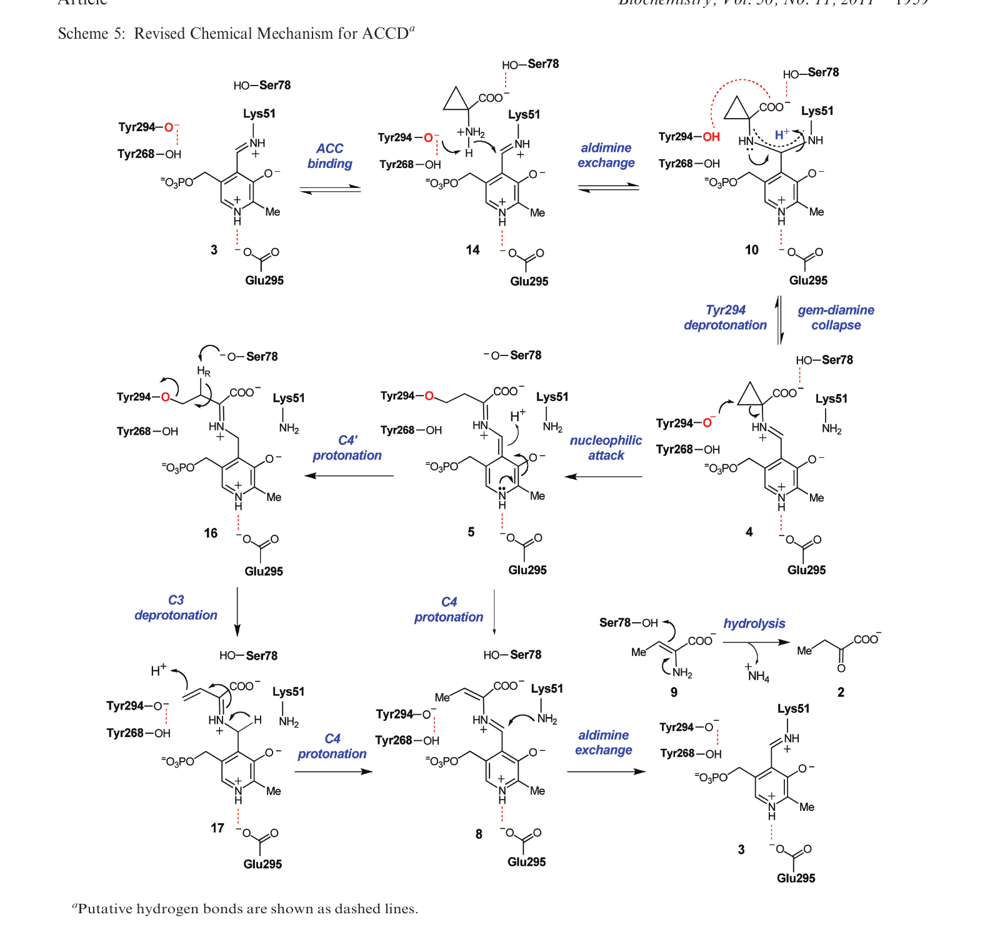
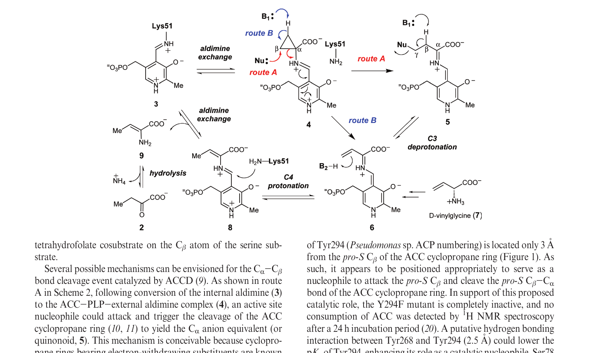
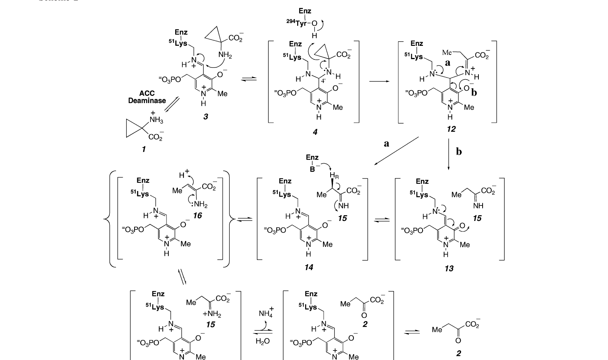
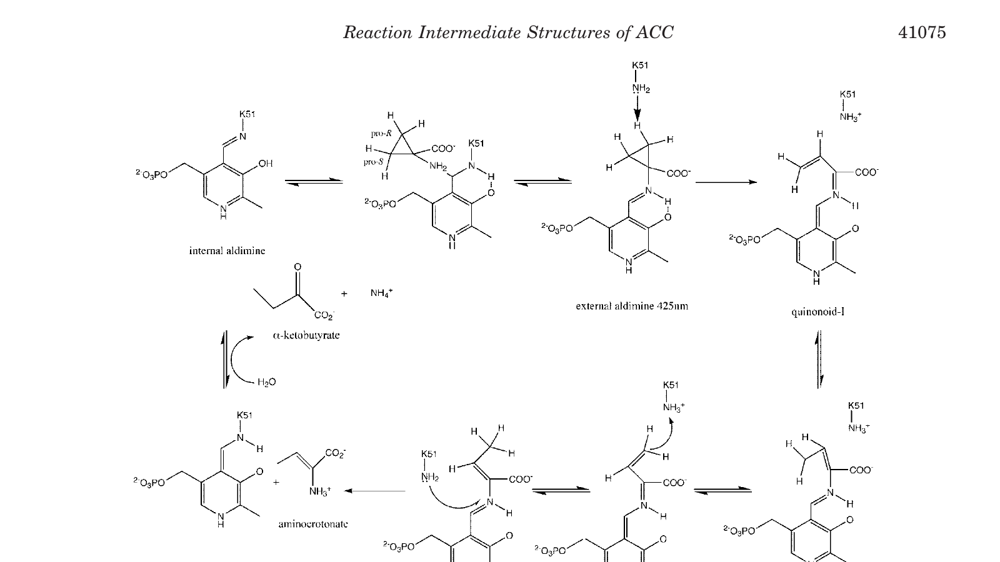
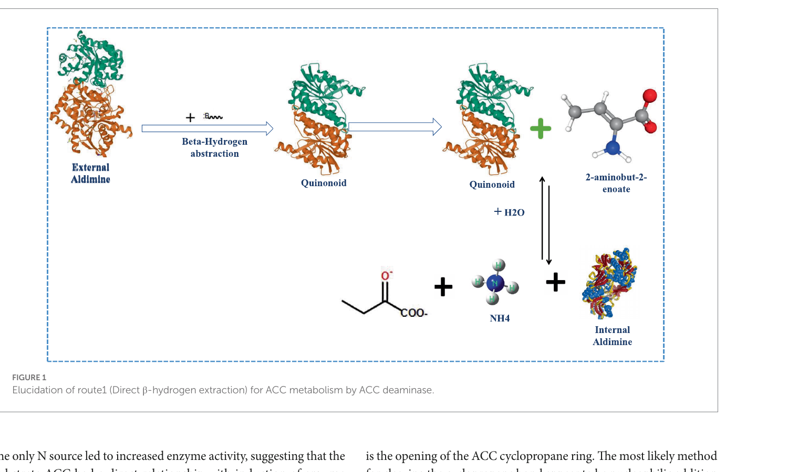
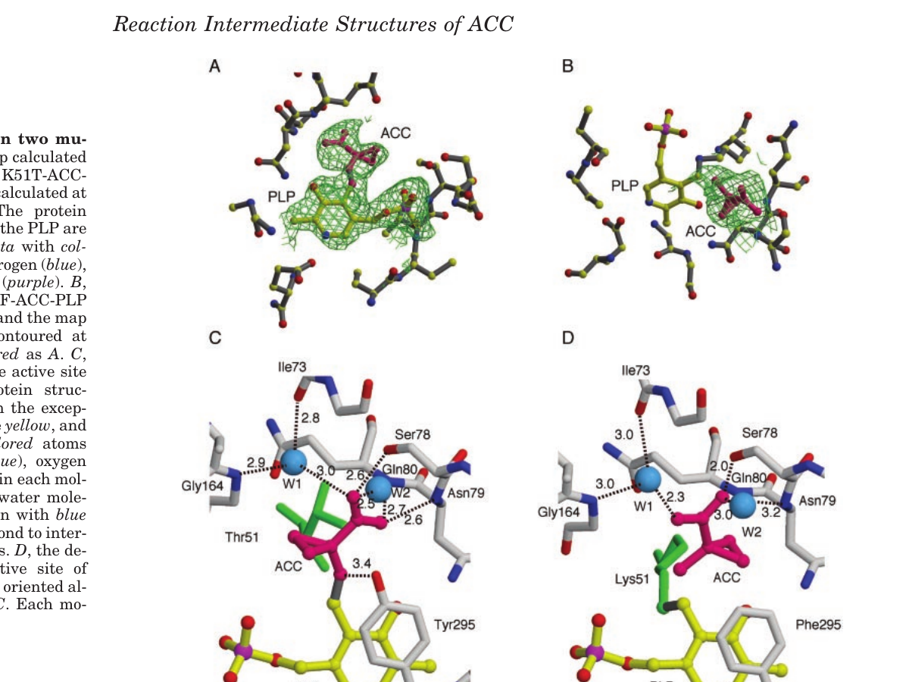
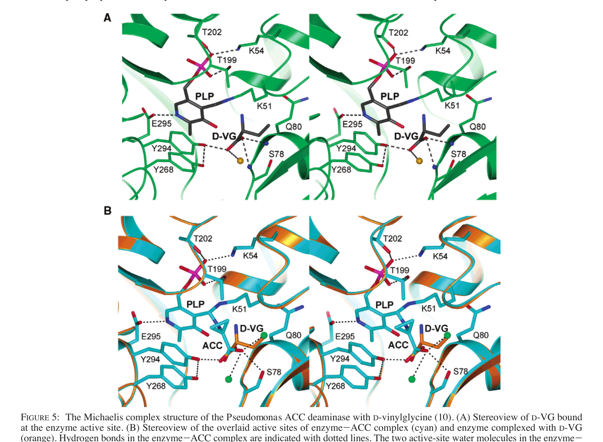
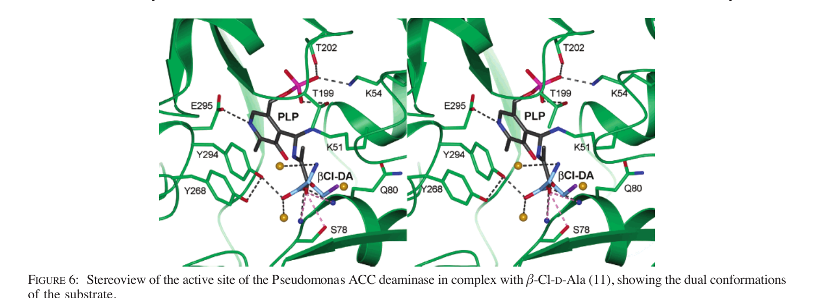

The overall reaction
ACC (1-aminocyclopropane-1-carboxylate) + H₂O → α-ketobutyrate (2-oxobutanoate) + NH₃
ACC has no α-hydrogen (its α-carbon is a quaternary spiro-centre on the cyclopropane ring), so canonical PLP β-elimination is impossible. ACC deaminase instead performs a unique cyclopropane ring-opening / C–C cleavage that is mechanistically analogous to γ-elimination from α-dialkyl amino acids. The cyclopropane C–C bond becomes the substrate for nucleophilic attack by the conserved Tyr294 phenolate.
Stoichiometry (Honma 1978): one ACC consumed per one α-ketobutyrate + one NH₃; no oxygen consumed; no external cofactor required. The bound PLP is regenerated each cycle.

Kinetic parameters
| Parameter | P. sp. ACP (Thibodeaux 2011) | P. putida UW4 (Hontzeas 2004) | P. sp. ACP (Honma 1978) |
|---|---|---|---|
| Km (ACC) | ~1 mM | 3.4 ± 0.2 mM | 1.5 mM |
| kcat | 1.32 s⁻¹ | 146 min⁻¹ (2.4 s⁻¹) | — |
| kcat/Km | 1.5 × 10⁴ M⁻¹s⁻¹ | 716 M⁻¹s⁻¹ | — |
| pH optimum | ~8.0 | 8.0 (bell, pKa 7.4 / 9.5) | 8.5–9.0 |
| T optimum | 25 °C | 22 °C | 30 °C |
| Activation ΔH‡ | — | 47 ± 2 kJ/mol | — |
| Activation ΔS‡ | — | −78 ± 5 J/mol·K | — |
| ΔG‡ (298 K) | — | 70 ± 1 kJ/mol | — |
| Tm | — | 60 ± 2 °C (CD); 58 °C (DSC) | — |


Catalytic cycle
Each step is supported by crystal structures and / or stopped-flow spectroscopy.
Resting enzyme (internal aldimine)
PLP is anchored to Lys51 Nε as a Schiff base. UV-Vis: ketoenamine band ~418 nm; minor enolimine at ~328 nm. A328/A418 ≈ 2.5 in UW4.
Substrate entry
ACC enters via the D39–N50 loop (gating residue Gly44; G44D blocks entry). Carboxylate is anchored by Ser78 OH (2.8 Å) and the main-chain amides of Asn79 / Gln80.
Gem-diamine intermediate
The α-amino group of ACC attacks C4′ of the internal aldimine, forming a tetrahedral gem-diamine. Stopped-flow detects 419 nm → 329 nm transition at k₁ = 260 s⁻¹.
External aldimine
Lys51 departs; PLP–ACC external aldimine forms (λmax 425 nm). Captured crystallographically as PDB 1J0D (yeast K51T) and 1TZ2 (bacterial + ACC).
Tyr294 attack / ring opening
Phenolate of Tyr294 (pKa lowered by H-bond with Tyr268) acts as nucleophile at the pro-S β-methylene (3.0 Å). C–C cleavage opens the cyclopropane ring and yields a stabilised PLP-quinonoid.
Quinonoid → β,γ-unsaturated ketimine
The cyclopropane opening produces a vinyl-bearing electron sink. Lys51 abstracts the methylene proton (β-position), giving a β,γ-unsaturated ketimine on PLP.
PLP-aminocrotonate
Tautomerisation produces the PLP-aminocrotonate complex. Slow phase k₂ ≈ 2.3 s⁻¹ observed by stopped-flow.
Hydrolytic release
The aminocrotonate is hydrolysed off PLP, tautomerises to the α-imino acid, and decomposes to α-ketobutyrate + NH₄⁺. Lys51 re-attacks C4′ to regenerate the internal aldimine.






Isotope effects (Thibodeaux & Liu 2011)
| Measurement | Value | Inference |
|---|---|---|
| D2O kcat | 5.7 | Proton transfer rate-limiting at kcat |
| D2O kcat/Km | 2.5 | Partial solvent contribution at first irreversible step |
| ¹³C KIE at Cα | 1.015 ± 0.005 | C–C bond cleavage partially rate-limiting |
| ¹³C KIE at pro-S Cβ | 1.017 ± 0.017 | Tyr294 attack on β-carbon during ring opening |
Substrate & inhibitor scope
Accepted substrates (Honma 1978; Hontzeas 2004)
- ACC (1-aminocyclopropane-1-carboxylate) — physiological substrate
- D-serine, D-alanine, D-valine — slowly deaminated
- 2-alkyl-ACC, vinyl-ACC, 2-aminoisobutyric acid
- Dimethyl-ACC, di-coronamic acid
Not accepted
- L-amino acids (Met, Ser, Thr, Cys, Trp, Tyr, homoserine, aminobutyric acid) — competitive inhibitors only
- 1-aminocyclopentane-1-carboxylate (5-membered analog) — too large for the active site
- Cystathionine


Inhibitors (Honma 1978)
- Carbonyl reagents that target PLP — NH₂OH (residual 12 %), PhNHNH₂ (30 %), semicarbazide (58 %), KCN (33 %), NaBH₄ (16 %); not restored by exogenous PLP
- AOA (aminooxyacetate) — Ki = 3.3 ± 0.17 µM (tomato D-CDes homolog)
- 1,5-I-AEDANS — covalently labels Cys162, disrupting the K51–PLP aldimine
Regulation in the cell
- Inducer: ACC itself, at concentrations as low as 100 nM. Basal activity is < 5 % of induced.
- Operon partner: acdR encodes an Lrp-family regulator divergently transcribed from acdS.
- Promoter elements: FNR box (microaerobic induction), Lrp/AcdR site, CRP site upstream of acdS.
- Feedback: α-ketobutyrate degrades to leucine, which inhibits AcdR/Lrp activation — providing a built-in product feedback loop.
- In symbiotic rhizobia: acdS is placed under nifA / σ⁵⁴ control (e.g., Mesorhizobium loti), tying ACCD expression to nodulation.